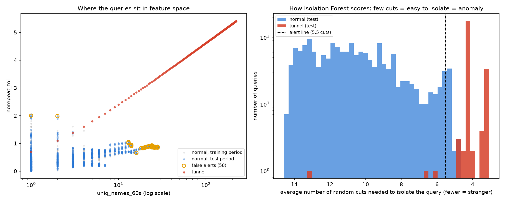

The short version for the report and the presentation: the idea, the model, the main result, how it compares with a simple rule, how robust it is, and what limits it. Every number comes from notebooks/04_results.ipynb. JM2030 Cybersecurity, Group 3, case 1.
A DNS tunnel hides data in query names. Resolvers cache repeated names, so a tunnel has to keep asking one domain for many new names. That is hard to avoid, and it is what we measure.
Features: uniq_names_60s uniq_ratio_60s norepeat_tol name_bytes. 300 trees, 10 random seeds (mean and spread reported).
| Measure | Mean over 10 seeds | What it says |
|---|---|---|
| ROC AUC / PR AUC | 0.996 / 0.993 | The tunnel is ranked almost perfectly |
| Recall | 0.987 | Only the first 2 to 3 queries of the session are missed |
| Precision | 0.746 (0.69 to 0.79) | Most alerts are real, but not all |
| False alert queries | 75 (58 to 97) | Mostly the busy Yahoo burst at 18:50 |
| Incidents | 1 real, about 3 false | The tunnel is one incident of 219 alerts |
The model leans on two features: unique names per domain and the long-memory score. Name length and the repeat ratio hardly matter here.
It finds no groups. It asks how many random cuts it takes to separate one query from all the others: normal queries sit in a dense cloud and need many, a tunnel query is alone and needs few.

Left: the normal queries form a dense cloud, the tunnel runs far away from it. Right: a normal query needs about 11 cuts to isolate, a tunnel query about 4.
A rule alerts when the number of unique names exceeds anything seen in normal training traffic. It has nothing to learn.
| PR AUC | Precision | Recall | F1 | False incidents | |
|---|---|---|---|---|---|
| Isolation Forest | 0.993 | 0.746 | 0.987 | 0.850 | 3.1 |
| Rule: unique names | 0.958 | 0.798 | 0.928 | 0.858 | 1 |
| Rule: name length or randomness | 0.324 | 0.909 | 0.180 | 0.301 | 2 |
On this loud tunnel the simple unique-names rule is about as good. The forest ranks better and misses less, and it wins clearly on slow tunnels (next section). Single-query checks on name shape miss most of the tunnel, because most tunnel queries are short polls.
The same model on other versions of the data. These are simulations built from this one capture: they test robustness, they do not prove generalisation.
| Case | Isolation Forest | Unique-names rule |
|---|---|---|
| Tunnel 60 times slower (about 25 minutes) | PR AUC 0.989, recall 0.98, alert within 1 s | PR AUC 0.861, recall 0.79, alert after 786 s |
| Normal traffic on 10 hosts | PR AUC 0.988, 19 false incidents | PR AUC 0.906, 10 false incidents |
| Only 244 quiet training queries | PR AUC 0.983, precision 0.18 | PR AUC 0.954, precision 0.30 |
| One tunnel name repeated | no change | no change |
The forest keeps catching a slow tunnel because the long-memory feature has no time window. With little or very calm training data the alert line is too low and the false alerts explode, while the ranking holds.